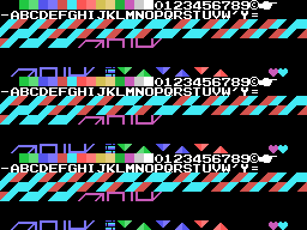

Hallazgos
Cada uno dice de dónde sale: del código, de una tabla de la ROM o de una prueba en openMSX. Las pruebas están en tools/pruebas/ y se cuentan en En el emulador.
Cinco en línea, no la pirámide entera
La fase no se acaba al acabar todos los cubos sino al tener cinco acabados seguidos en una fila, columna o diagonal de la cuadrícula de 9 × 9 (0x7421). Una rutina por cuadro, por turnos, cuenta las filas (0x7330), las columnas (0x7353) y las dos diagonales (0x7369, 0x737D), y en cada vuelta de cuatro cuadros cuenta los cubos de un jugador: la máscara del and de la rutina de tres bytes que el juego escribe en 0xE4FD pasa de 0x40 a 0x20.
La cuarta comprobación decide: una línea basta hasta la fase 30, hacen falta dos de la 31 a la 40 y tres de la 41 a la 50 (0x7391-0x73A6).
Probado en openMSX: con cinco cubos de la fila 4 de la fase 1 marcados como acabados, el juego pasa al paso de fase acabada y cobra el tiempo.
Los cubos ruedan
0x72C0 son 24 filas de cuatro bytes: el giro en el que se convierte cada uno de los 24 al saltarle encima en cada una de las cuatro diagonales. Son los 24 giros de un cubo: cada columna es una permutación, y cualquier giro se alcanza desde cualquier otro en cuatro saltos como mucho (medido recorriendo la tabla; lo comprueba tests/test_juego.py).
Un cubo está acabado cuando sus tres caras visibles coinciden con las del modelo (0x722F), así que para acabar uno hay que planear la ruta de saltos.
Piedra, papel o tijera
En el duelo, si se acaba el tiempo con los mismos cubos, o si caen los dos, se juega a JAN-KEN-PON (0x89C6): LET'S PLAY JAN-KEN, cada uno elige con su mando (abajo papel, izquierda tijera, arriba piedra, 0x8B2B) y la mano siguiente gana a la anterior: tijera a papel, piedra a tijera, papel a piedra (0x8A89). Sin pulsar, a cada uno le toca una al azar.
Las manos de la derecha son las de la izquierda reflejadas: 0x8C5F copia 45 tiles de la VRAM a la VRAM dándole la vuelta a cada byte.

La vida escondida
0x9093 apunta el resultado de los tres últimos saltos: 1 si acabó un cubo, 0 si lo giró sin acabarlo, 0x40 si cayó en uno ya acabado. Con tres unos seguidos, menos de 8 vidas y un jugador, sale una vez un objeto a la altura de Q\*bert que cruza de izquierda a derecha un píxel por cuadro (0x8FDF), y tocarlo da una vida con el sonido de la vida extra.
Probado en openMSX: con la racha puesta a mano, el objeto sale en la Y de Q\*bert, cruza, y las vidas pasan de 2 a 3.

F5 y F1
En la escena 7 se lee la fila 7 del teclado: F5 pone la puntuación a cero, tres vidas y vuelve a la misma fase (0x4396). F1 pausa y quita la pausa, pero solo mientras suenan las músicas de la fase (0x6AA3).
Probado en openMSX: el CONTINUE vuelve a la partida con la fase 1 y dos vidas de reserva; la pausa deja el tiempo quieto hasta el segundo F1.
La bonificación
Tras las fases 3, 6 y 10 de cada decena (0x79AE, sobre las unidades de la fase menos una) el bit 0 del modo se enciende, se carga el tablero de 0xA7AD y la partida corre otro paso (0x789D): la pantalla se destapa de arriba abajo, Q\*bert se queda en cada cubo y las diagonales lo giran (0x7A37); al acabarlo pasa al siguiente (0x7A47). Al final se cuentan: cada cubo acabado se tapa con sus puntos, 100 el primero, 200 el segundo… y con los 27 sale PERFECT 5000 POINT.
Probado en openMSX: tras la fase 3 empieza la bonificación. El PERFECT sale del código.
Quince objetos
Los objetos 4 a 18 salen cada uno a su tiempo (0x7444: cada 64 cuadros baja su espera, y al salir vuelve a 15) sobre uno de los dos cubos de la cima. Lo que hace cada uno lo reparte 0x7628: la bola verde congela 128 cuentas de cuatro cuadros, la gris hace huir a todos, la roja da el salto largo, la amarilla y la tortuga cambian la velocidad, la azul da invencibilidad y el que gira cubos da 100 puntos. Los ocho que matan son el moái, el encapuchado y los seis de colores, que se quedan pegados a los cubos cuya cara de arriba es de su color (0x750D). El encapuchado va hacia Q\*bert (0x7559), y si cae en un cubo que está girando se cae y da 1.000 puntos (0x6E99).
Sale del código; los dibujos, de la ROM.
La bola verde escribe en la BIOS
0x7763 es ld hl,000BCh y luego 0x6E2F escribe en (hl) y (hl-2): 0x00BC y 0x00BA son la ROM de la BIOS y no pasa nada. El mismo código con 0xE2BC quitaría el objeto 23. Es una suposición razonada: el byte alto se perdió.
El visor de patrones, ejecutado
0x6757 pone en cada casilla de la tabla de nombres el byte bajo de su dirección: 0, 1, 2… 255, tres veces. Es una herramienta de desarrollo para ver de golpe todos los tiles cargados, y se quedó en la ROM sin que nadie la llame.
Ejecutado en openMSX (tools/omsx_huerfanos.tcl, que desvía un cuadro al trozo y vuelve): sobre la fase 1 y sobre el título. Montado desde la ROM y cotejado: 0 diferencias en los tiles que monta cada pantalla. Los demás son restos de pantallas anteriores.

La marca de Konami
Los diez últimos bytes: el título en katakana al revés (キューバート), su longitud, el 0x46 de RC-746 y 0xAA. Nadie los lee.